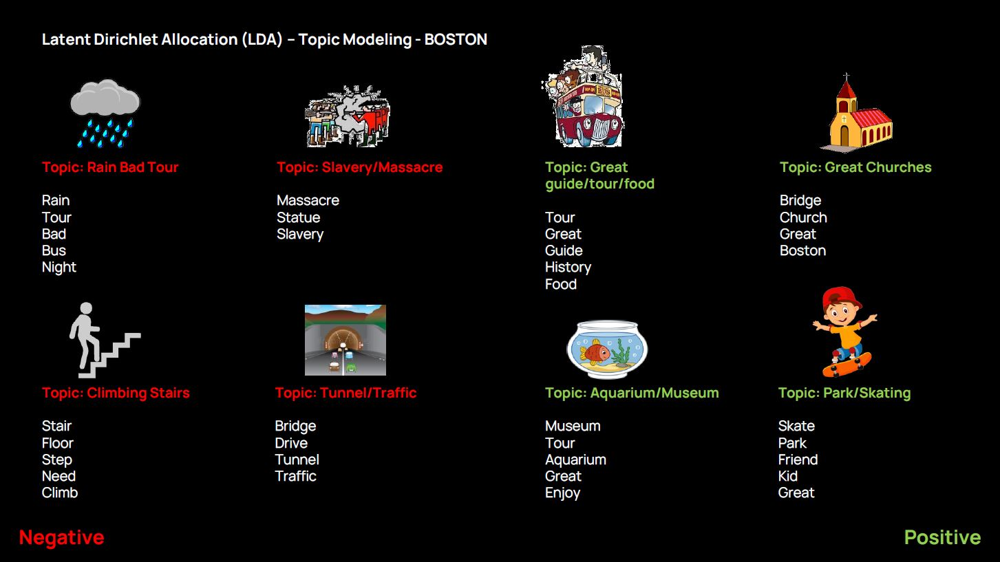

|
The Pulse of the City -A data-driven comparative analysis of the features of tourist interest across three global cities- Rohit Priyadarshi Sanatani
Final project for the MIT class
4.550/4.570
Computation Design Lab |
|
|
Overview Tourist attractions play major roles in shaping the mental image of cities for residents and visitors alike. While there have been numerous studies over the past decades inquiring into urban tourist sentiment and features of interest, the exponential growth of big-data over the past few years have opened up valuable methodological appraches in this regard (Alaei et al. 2019). |
|
Project OverviewDrawing upon Point of Interest (POI) data for tourist attractions across three cities across the globe - Boston, Singapore and Sydney - this body of research analyses the predominant themes of discussion and features of interest that contribute towards popular tourist sentiment towards these cities. The study collects over 3500 user reviews and over 6000 photographs across 750 tourist attractions through the Google Places API. This data is then merged with Flickr data streams for additional visual content, and Twitter posts for additional data on topics of interest. Sentiment analysis is then carried out on the textual data using the NLTK Vader analyzer, for the extraction of emotional content. A Latent Dirichlet Allocation (LDA) model is used for topic-modeling for the extraction of high-level concepts and predominant topics of discussion emergent from these cities. A faster-RCNN object detection model trained on the Open-Images V4 dataset is then run on the user photographs for extraction of semantic features contained within them. Unsupervised K-means clustering is carried out on these features, to identify the major themes of tourist interest. Similar clustering is then carried out on the combined dataset, to identify major themes of discussion and corresponding features of interest that frequently appear together. Finally, a qualitative assessment of these clusters is embarked upon, for a comparative analysis of the major similarities and differences in patterns of tourist interest across the five cities. It is hoped that the methodological framework demonstrated through this work is able to provide valuable insights into the multitude of ways in which different cities across the world are perceived by tourists and visitors. |
||
|  |
Fig 1. Latent Dirichlet Allocation (LDA) - Topic Modeling - BOSTON Positive and Negative themes emerging from topic modeling on Boston reviews. |
|
Fig 2. Negative Comments Spatial distribution of negative themes - Boston |
|
|
Fig 3. Positive Comments Spatial distribution of positive themes - Boston |
|
|
Fig 4. Comparison between Boston, Singapore, and Sydney Comparison of themes associated with positive and negative sentiment across Boston, Singapore and Sydney |
|
References
Alaei, A.R., Becken, S. and Stantic, B., 2019. Sentiment analysis in tourism: capitalizing on big data. Journal of Travel Research, 58(2), pp.175-191
|
2013 All rights reserved. Last modified: Jan. 30, 2014 by TN